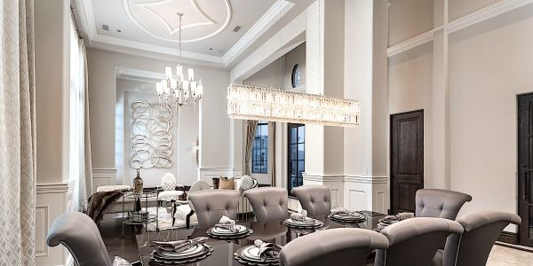

Fresh Outlook Vegetarian Restaurants
Fine dining using only the freshest ingredients
and prepared by our top chefs.
and prepared by our top chefs.


The dining area have been conceived in an unusual way by surrounding
the central open dining area facing the river view by raised
platforms where we created a series of semi private dining rooms, a
solution that maintain the privacy of the guests but maintaining the
possibility to appreciate the outstanding view.
There is something romantic about a formal dining room. Perhaps it
is the thought of having a room completely devoted to eating and
entertaining, or the idea of enjoying a sit-down dinner with family
and friends.
